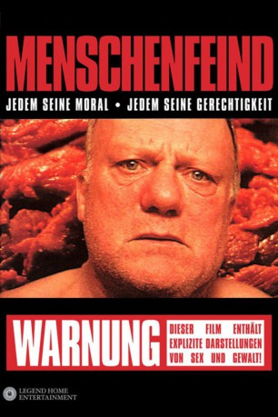

#6458 Menschenfeind
Alternativ: I Stand Alone (Englischer Titel)
 
 IMDB-Wertung: 7.5 / 10
IMDB-Wertung: 7.5 / 10  Metascore: 0
Metascore: 0 
Irgendwo in Frankreich: Ein Metzger tötet einen Bauarbeiter, den er irrtümlich für den Vergewaltiger seiner geistig behinderten Tochter hält und wandert dafür in den Knast. Jahre später: Der nun arbeitslose Metzger ist wieder in Freiheit. Doch sein Leben ist die Hölle und bringt ihn zum Ausrasten: Als es zum Streit mit seiner neuen Frau kommt, tötet er ihr ungeborenes Baby. Er setzt sich nach Paris ab und ist schon nach wenigen Tagen pleite. Von Selbstmordgedanken gepeinigt fasst er den Entschluss, seine Tochter, die dort in einem Heim wohnt, noch einmal zu sehen...
Jahr: 1998
Dauer: 88 Minuten
FSK: 18
Land: Frankreich Studio: Legend Films InternationalTonspuren:
Untertitel:
Auflösung: 720p (960x352) Größe: 1208 MB
Genre: Thriller, Drama, Krimi
Regisseur: Gaspar Noé
Drehbuch: Gaspar Noé
Soundtrack:
Darsteller:
 Philippe Nahon als Le Boucher
Philippe Nahon als Le Boucher- Blandine Lenoir als Sa Fille
- Guillaume Nicloux als Directeur du Supermarche
- Frankie Pain als Sa Maitresse
- Martine Audrain als Sa Belle-Mere
- Zaven als L'Homme a la Morale
- Jean-François Rauger als Agent Immobilier
- Olivier Doran als Presentateur
- Aïssa Djabri als Docteur Choukroun
- Serge Faurie als Directeur d'Hospice
- Fréd��ric Pfohl als Infirmier de Hospice
- Stéphanie Sec als Infirmiere de Hospice
- Arlette Balkis als Femme Mourante
- Gil Bertharion Jr. als Camionneur
- Rado als Gardien de l'Hotel
- Nicolas Jouhet als Patron de Cafe
- Ahmed Bounacir als Client de Cafe
- Roland Guéridon als Vieil Ami
- Hervé Gueridon als Deuxieme Ami
- Sophie Nicolle als Fille d'Interim
- Paule Abecassis als Junkie
- Marie-Madeleine Denecheau als Femme de Roland
- Robert Roy als Quatrieme Ami
- Joël Leculle als Premier Boucher
- Denis Falgoux als Deuxieme Boucher
- Marc Faure als Directeur de l'Abattoir
- Gérard Ortega als Patron du Bar
- Stéphane Derdérian als Fils du Patron
- Alain Pierre als Ami du Patron
- Sylvie Raymond als Infirmiere
- Robert Schlockoff als
- Thierry Tronchet als
- André Brochenin als
- Elisabeth Weissman als
- Paulette Charpentier als
- Manu als
- Tami als
- Laurent Aknin als Homme au bar
- Roger Daviot als
- Monsieur Billot als Troisieme Boucher
- Tateos Derdérian als
- Jean-Max Causse als
Datei: X:\FSK18-1900-1999\Menschenfeind (1998, FSK18, 960x352).mp4 seit 23.06.2017
Festplatte: FSK18
 Es gibt insgesamt 108 Filme in der Gruppe 'FSK18-1900-1999'
Es gibt insgesamt 108 Filme in der Gruppe 'FSK18-1900-1999'